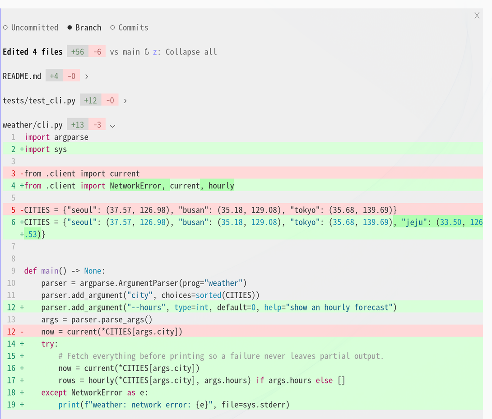
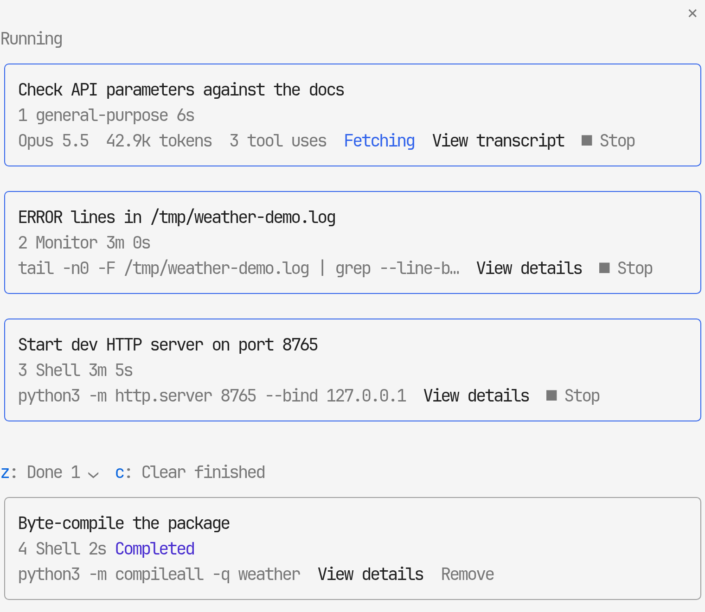
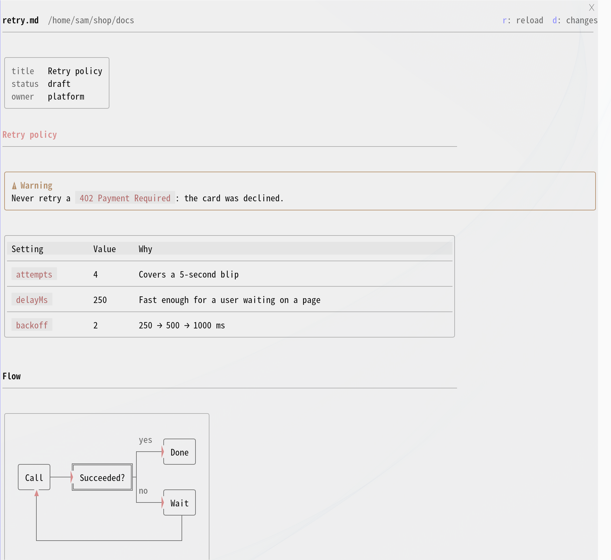
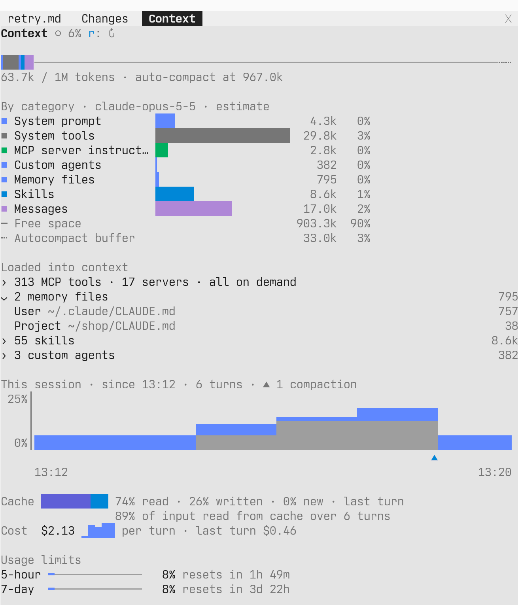
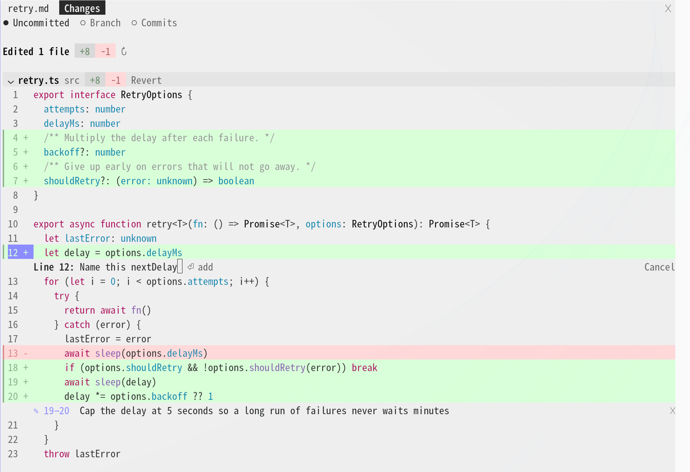

a plugin for claude code · mitclaude code 플러그인 · mit
Your Claude Code terminal, drawn like the desktop app Claude Code 터미널을 데스크톱 앱처럼
desk-look redraws the Claude Code CLI to look and work like the Code tab of the Claude desktop app. It changes how the screen is drawn and leaves the engine as it is.
desk-look 은 Claude Code CLI 를 Claude 데스크톱 앱 Code 탭처럼 보이고 동작하게 다시 그립니다. 엔진은 그대로 두고 화면을 그리는 방식만 바꿉니다.
/plugin install desk-look --marketplace KyongSik-Yoon/cc-desktop-modReading todo.py and README.md first.
Read 2 files, edited 2 files +25−4 ›
Running it in the scratchpad so the real todos.json isn't touched.
Ran a command ›
done <n> now works in todo.py, and README.md has a Usage section that lists it. An out-of-range number and a non-number each exit with code 1.
| Command | Effect |
|---|---|
add <text> | Append a new item |
list (default) | Show all items |
done <n> | Mark item n finished |
Data is stored in
todos.json in the current working directory.⧉ copy ❝ quote
✻ Baked for 12s · done 10:24 AM
+ desk-look The same turn: calls folded into one line, a full-width table, an alert box, and a card of the files this turn edited.같은 턴: 호출은 한 줄로 접히고, 표는 폭을 채우고, 알림 상자와 이번 턴에 고친 파일 카드가 붙습니다. Claude Code As it ships: a row and a result block per call, a grid table, a duration line at the end.기본 모습: 호출마다 한 줄과 결과 블록, 격자 표, 끝에 걸린 시간 한 줄.
- The engine stays as it is엔진은 그대로
- A function-hook plugin: only the drawing changes. The desktop app's own Code tab is left alone.
- 함수 훅 플러그인이라 화면 그리기만 바꿉니다. 데스크톱 앱의 Code 탭은 건드리지 않습니다.
- No network of its own스스로는 네트워크를 쓰지 않음
- desk-look makes no network request and calls no MCP server. Pull requests come from your own
ghorglab. - desk-look 은 네트워크 요청도 MCP 호출도 하지 않습니다. PR 은 내
gh·glab으로 읽습니다. - English · 한국어
- Labels, panes and toasts follow Claude Code's own language setting.
- 표시·패널·알림 문구는 Claude Code 의 언어 설정을 따릅니다.
- Light and dark밝은 테마와 어두운 테마
- Colors come from the engine's theme keys, so both themes are followed.
- 엔진 테마 색을 쓰므로 두 테마 모두 따라갑니다.
the transcript대화 기록
It reads like the desktop app데스크톱 앱처럼 읽힙니다
Each row reads terminal default → desk-look. The folded tool line below opens on click, the way the real one does.
줄마다 왼쪽이 터미널 기본, 오른쪽이 desk-look 입니다. 아래 접힌 도구 줄은 실제처럼 눌러서 펼 수 있습니다.
-
Your prompt프롬프트
CLAUDE CODE>Add a `done <n>` command to todo.pyDESK-LOOKAdd a `done <n>` command to todo.pyA gray bubble: a pill for one line, a box with rounded corners for several, on the left or the right. Pasted images show as thumbnails above it.
회색 말풍선: 한 줄이면 알약, 여러 줄이면 모서리가 둥근 상자이고, 왼쪽·오른쪽을 고를 수 있습니다. 붙여 넣은 이미지는 그 위에 미리보기로 보입니다.
-
Tool calls도구 호출
CLAUDE CODE●Read(todo.py)⎿Read 41 lines●Read(README.md)⎿Read 12 lines●Update(todo.py)⎿Updated todo.py with 17 additions…●Update(README.md)⎿Updated README.md with 8 additionsDESK-LOOKRead todo.pyRead README.mdEdited todo.py +17−430 if cmd == "add":31- else:31+ elif cmd == "done":32+ n = int(sys.argv[2])Edited README.md +8−0Consecutive calls fold into one line that expands on click. Expanded, edit diffs show right away with file line numbers and three lines of context. The ctrl+o transcript keeps the engine's full rows.
이어지는 호출은 눌러서 펴는 한 줄로 접힙니다. 펴면 고친 diff 가 파일 줄 번호와 앞뒤 세 줄과 함께 바로 보입니다. ctrl+o 화면은 엔진의 모든 줄을 그대로 둡니다.
-
Subagents서브에이전트
CLAUDE CODE●Task(Check API parameters against the docs)⎿Done (3 tool uses · 42.9k tokens · 6s)DESK-LOOKgeneral-purpose Check API parameters against the docs 3 tool uses · 42.9k tokens · 6s ›A card per agent with its type, tool count, tokens, time and changed lines. Click it for the result. Background agents still running at the end of a turn get a row each.
에이전트마다 카드: 종류, 도구 수, 토큰, 시간, 바꾼 줄. 누르면 결과가 보입니다. 턴이 끝날 때 아직 도는 백그라운드 에이전트는 한 줄씩 남습니다.
-
Diagrams and tables그림과 표
CLAUDE CODE```mermaid flowchart TD argv --> cmd cmd -->|add| a[add text] cmd -->|done| v{valid n?} cmd -->|other| show ```DESK-LOOKmermaid blocks become box diagrams with arrowheads that touch the boxes. Tables run full width with a gray header, and
> [!NOTE]becomes a box bordered in its alert color.mermaid 블록은 화살촉이 상자에 닿는 상자 그림이 됩니다. 표는 회색 머리줄과 함께 폭을 채우고,
> [!NOTE]는 알림 색 테두리 상자가 됩니다. -
Questions질문
CLAUDE CODE☐ Next cityWhich city should the CLI support next?❯ 1. OsakaMajor Kansai hub, Japan2. Sapporo3. Daegu4. Type something.DESK-LOOKNext cityWhich city should the CLI support next?1: Osaka Major Kansai hub, Japan2: Sapporo Snowy northern Japan city3: Daegu Hot inland Korean cityOther: double-click to type9: Default dialogA card right above the prompt. With an empty prompt, pick by number:
1–8the options,0submit,9the default dialog. Hover an option for its preview.입력창 바로 위의 카드입니다. 입력창이 비어 있으면 번호로 고릅니다:
1–8선택지,0제출,9기본 창. 선택지에 마우스를 올리면 미리보기가 보입니다. -
End of turn턴 끝
CLAUDE CODE✻Baked for 12sDESK-LOOK⧉ copy ❝ quote
✻ Baked for 12s · done 10:24 AM
Edited 2 files+25−4 todo.py+17−4 README.md+8−0A card of the files the turn edited; click a row to open that file in the diff pane.
⧉ copycopies the answer and❝ quoteputs your selection into the prompt as a quote.이번 턴에 고친 파일 카드입니다. 파일 줄을 누르면 diff 패널에서 그 파일이 열립니다.
⧉ copy는 답을 복사하고,❝ quote는 고른 글을 입력창에 인용으로 넣습니다.
around the prompt입력창 둘레
The whole session, one glance above the prompt입력창 바로 위에서 세션이 한눈에
A gray chin band like the one under the desktop prompt, chips for the pull request, context and background tasks, and a progress band while a turn runs. Each chip opens its pane.
데스크톱 입력창 아래 턱 같은 회색 띠, PR·컨텍스트·백그라운드 작업 칩, 턴이 도는 동안의 진행 띠가 있습니다. 칩을 누르면 그 패널이 열립니다.
- ✓ 2 ◉ VerifyingThe current step: the task list, or the first sentence Claude wrote before its latest call (Claude 5 models).지금 단계: 할 일 목록, 또는 Claude 가 마지막 호출 전에 쓴 첫 문장 (Claude 5 모델).
- ▶ … · java 97%What runs now: the tool call, its time and, for a shell command, the program it started and its CPU. Click for /desk-activity.지금 도는 일: 도구 호출과 시간, 셸 명령이면 띄운 프로그램과 CPU. 누르면 /desk-activity.
- weather-cli feat/hourlyRepository and branch, on the band like the desktop prompt's chin.저장소와 브랜치, 데스크톱 입력창 턱처럼.
- +48 −6Changed lines. Click for /desk-diff;
✎ Nappears here while line comments wait.바뀐 줄 수. 누르면 /desk-diff, 줄 댓글이 기다리는 동안 여기✎ N이 붙습니다. - #12 ✓ 5/5The branch's PR or MR: checks,
✗failing,◆unresolved threads. Click for /desk-pr.브랜치의 PR·MR: 체크,✗실패,◆안 풀린 리뷰 스레드. 누르면 /desk-pr. - ◑ 62%Context, once it passes half. Click for /desk-context.컨텍스트, 절반을 넘으면. 누르면 /desk-context.
- ⋯ 2Background tasks still running. Click for /desk-tasks.아직 도는 백그라운드 작업. 누르면 /desk-tasks.
- ✉ 3Unread Slack messages, with the desk-slack plugin.안 읽은 Slack 메시지, desk-slack 플러그인이 있으면.
side panes오른쪽 패널
Seven panes beside the conversation대화 옆 패널 일곱 개
Open one with its command or a chip. They open at once, even while Claude is working, without queueing or stopping the turn. /desk-fold folds them away and back.
명령이나 칩으로 엽니다. Claude 가 일하는 중에도 턴을 멈추거나 줄 세우지 않고 바로 열립니다. /desk-fold 로 접었다 폅니다.
Diffsdiff
Uncommitted changes, the whole branch, or per commit, drawn like the desktop diff panel: a header band per file, full-width green and red rows, changed words in a darker tint. Only rows near the view are drawn, so a diff of thousands of lines scrolls as fast as a short one.
커밋 안 한 변경, 브랜치 전체, 커밋별 diff 를 데스크톱 diff 패널처럼 그립니다: 파일마다 머리 띠, 폭을 채우는 초록·빨강 줄, 바뀐 낱말은 더 진하게. 보이는 근처 줄만 그려서 수천 줄짜리 diff 도 짧은 것처럼 스크롤됩니다.
- n p next or previous file다음·이전 파일
- f filter files by path경로로 파일 거르기
- z unfold or fold every file모든 파일 펴기·접기
- v compare against another base branch다른 기준 브랜치와 비교

What ran this turn이번 턴에 돈 일
Time bars for the main conversation, each agent the turn started and its background shells, then the flow of Claude's notes and calls with the time since the turn began. Click the lower line of the progress band to open it.
메인 대화, 턴이 띄운 에이전트, 백그라운드 셸마다 시간 막대가 있고, 그 아래 Claude 의 설명 글과 호출이 턴 시작부터 잰 시간과 함께 흐릅니다. 진행 띠 아랫줄을 눌러 엽니다.
- ░ ▓ ▒ ━ ─ explore, edit, test, command, responding살펴보기, 고치기, 테스트, 명령, 답하기
Background tasks백그라운드 작업
This session's agents, background shells and monitors, under Running and Done. Read an agent's transcript, open it in the main view to talk to it, or stop a task with a second press.
이 세션의 에이전트·백그라운드 셸·모니터를 실행 중과 끝남으로 나눕니다. 에이전트 기록을 읽거나, 메인 화면에 열어 그 에이전트와 이야기하거나, 두 번 눌러 멈출 수 있습니다.
- z fold Done끝남 접기
- c clear finished tasks끝난 작업 치우기
- b back to the list목록으로

Pull requestPR
The current branch's pull request through gh, or merge request through glab: state, failing and running checks, unresolved review threads. Hand to Claude fills the prompt with a failing check or a thread. Merge asks for a second press, and only at the head commit the pane showed.
지금 브랜치의 PR(gh) 이나 MR(glab): 상태, 실패·진행 중 체크, 안 풀린 리뷰 스레드. Hand to Claude 는 실패한 체크나 스레드를 입력창에 채웁니다. Merge 는 두 번 눌러야 하고, 패널이 보여 준 head 커밋에서만 머지합니다.
- r read the PR againPR 다시 읽기
Markdown preview마크다운 미리보기
A document Claude writes in a turn opens here when the turn ends, drawn with the transcript's own renderer: bordered tables, mermaid diagrams, alert boxes, front matter as a small key/value box. It follows later edits of the file.
Claude 가 한 턴에 쓴 문서는 턴이 끝나면 여기 열립니다. 대화와 같은 렌더러로 테두리 표, mermaid 그림, 알림 상자, front matter 키·값 상자를 그리고, 그 뒤 고친 내용도 따라갑니다.
- d open the document in the diff pane문서를 diff 패널에서 열기
- o open it full-window in your browser브라우저에서 전체 창으로 열기

Context and usage컨텍스트와 사용량
Replaces the /context grid. A bar in each category's own color, each category with a bar of its own, and what is loaded into the context: MCP tools by server, memory files, the skill listing and custom agents, each group folded until you click it.
/context 격자를 대신합니다. 항목마다 제 색으로 칠한 막대, 항목별 가로 막대, 그리고 컨텍스트에 실린 것(서버별 MCP 도구, 메모리 파일, 스킬 목록, 커스텀 에이전트)을 묶음으로 접어 두었다가 누르면 펼칩니다.
Below that, this session: how full the context was at the end of each turn, with ▲ where it was compacted, the share of input read from cache, the cost of each turn, and the 5-hour and 7-day limits.
그 아래는 이 세션입니다: 턴이 끝날 때마다 컨텍스트가 찬 정도와 압축한 자리 ▲, 캐시에서 읽은 입력의 몫, 턴마다 비용, 5시간·7일 한도.
The breakdown is calculated when the pane opens and on r. The session graph uses what each turn already reports, and a closed pane does nothing.
항목별 내역은 패널을 열 때와 r 때 계산합니다. 세션 그래프는 턴마다 이미 오는 값으로 그리고, 닫힌 패널은 아무 일도 하지 않습니다.
- r recalculate the breakdown내역 다시 계산

Recent sessions최근 세션
Recent sessions grouped by project, with search. Pick one and this window switches to it, moving to its folder first when it lives elsewhere. Sessions open right now carry a chip: working, background, needs input, open elsewhere.
프로젝트별로 묶은 최근 세션과 검색. 하나를 고르면 지금 창이 그 세션으로 바뀌고, 다른 폴더라면 먼저 그 폴더로 옮겨 갑니다. 지금 열려 있는 세션에는 working, background, needs input, open elsewhere 칩이 붙습니다.
- f search검색
- z collapse or expand every group모든 묶음 접기·펴기

diff line commentsdiff 줄 댓글
Comment on any diff linediff 줄마다 댓글
Like the desktop diff panel. Claude reads your comments with your next prompt.
데스크톱 diff 패널처럼. 남긴 댓글은 다음 프롬프트와 함께 Claude 가 읽습니다.
- Click a line number in
/desk-diff./desk-diff에서 줄 번호를 누릅니다. - Click another line number in the same file for a range, type, and press Enter.같은 파일의 다른 줄 번호를 누르면 범위가 됩니다. 쓰고 Enter 를 누릅니다.
- Kept comments wait as
✎ Non the chin band, then go with your next prompt: the file, the lines and your note.남긴 댓글은 턱 띠에✎ N으로 기다리다가 다음 프롬프트와 함께 갑니다: 파일, 줄, 댓글.
a session, recorded한 세션 녹화
Watch it run돌아가는 모습
your setup쓰던 환경 그대로
Fits the tools you already use쓰던 도구에 그대로 맞습니다
GitHub · GitLab
Pull requests through gh, merge requests through glab. Checks, pipeline jobs and review threads show either way, and the chip keeps polling while a check is still running.
PR 은 gh, MR 은 glab 으로 읽습니다. 체크, 파이프라인 잡, 리뷰 스레드가 어느 쪽이든 보이고, 체크가 도는 동안에는 칩이 계속 새로 읽습니다.
Asana and Slack, if you want themAsana·Slack 은 필요할 때만
desk-asana and desk-slack are separate plugins in the same marketplace. Install only the one you use.
desk-asana·desk-slack 은 같은 마켓의 별도 플러그인입니다. 쓰는 것만 설치하세요.
/plugin install desk-asana@cc-desktop-mod/plugin install desk-slack@cc-desktop-modTerminals터미널
Round bubble corners and image thumbnails draw in kitty, Ghostty and iTerm2 3.5+, and through tmux 3.3+ and herdr. The gray fills follow the omarchy theme; elsewhere bubbles get a rounded border.
둥근 말풍선 모서리와 이미지 미리보기는 kitty, Ghostty, iTerm2 3.5+ 에서, tmux 3.3+·herdr 안에서도 그립니다. 회색 채움은 omarchy 테마를 따르고, 그 밖에서는 말풍선이 둥근 테두리가 됩니다.
install설치
One line at the prompt입력창에 한 줄
- At the prompt of a Claude Code session, run:Claude Code 세션 입력창에서 실행합니다:
/plugin install desk-look --marketplace KyongSik-Yoon/cc-desktop-mod - Answer y when asked to add the marketplace, and pick the user scope.마켓을 추가할지 물으면 y, 범위는 user 를 고릅니다.
- Later, update with
/desk-update. It updates desk-asana and desk-slack too, and reloads plugins when a new version came in.업데이트는/desk-update. desk-asana·desk-slack 도 함께 올리고, 새 버전이 오면 플러그인을 다시 불러옵니다.
Settings live in /config: search for desk-look to set the language, the bubble side, the context chip, how long the progress band stays, and more. Every setting
설정은 /config 에서 desk-look 을 찾으면 됩니다. 언어, 말풍선 위치, 컨텍스트 칩, 진행 띠가 남는 시간 등을 고릅니다. 설정 전체 보기
desk-look follows the latest Claude Code release and is tested there. On an older version, parts the engine can't draw yet fall back to its default look.
desk-look 은 최신 Claude Code 를 따르고 거기서 시험합니다. 옛 버전에서는 엔진이 아직 못 그리는 부분이 기본 모양으로 돌아갑니다.